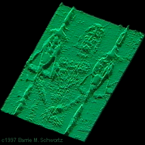
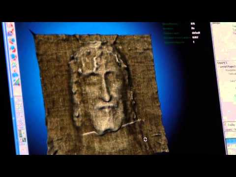
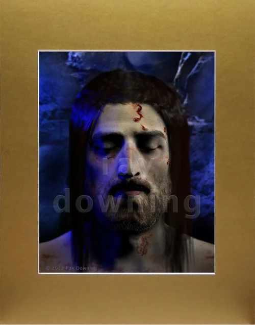

From brightness to depth.
Does the image describe a face—or a gap beneath cloth? Try both interpretations.
See exactly what the photograph’s tones become when treated as heights.
Both views share the same image grid, height scale, camera, and surface material.
Brightness after the selected processing. The line on the source marks this section.
Reference geometry: unavailable for the Shroud photograph.
Brightness is not a depth measurement. An awkward relief does not refute a full reconstruction; a convincing one does not establish anatomy or identity. Method & limits ↗
Where does the shape come from?
Change the cloth.
In the distance model, the same image can describe different bodies beneath different cloth shapes. Rotate to Profile to see the change.
Reveal the added shape.
“Broad shape + image” supplies a featureless head and keeps finer image detail. Compare the supplied shape on the left with the result on the right.
Test a known answer.
The known-distance test starts with synthetic geometry. Correct assumptions recover it; changing the cloth or distance law produces measurable error.
From a faint image
to a human face.
HISTORY’s 2010 The Real Face of Jesus? featured Ray Downing’s Shroud reconstruction. Earlier VP-8 work also claimed depth information. These published examples motivated this lab: which parts come from the image, and which require added assumptions? Sources & workflow ↗



Try the cloth–body mode above to explore the missing step. It tests the published principle, not Downing’s exact reconstruction; his full numerical recipe and original input are not provided in the accounts linked here.
Try the cloth–body model ↑